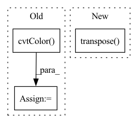

Pattern ID :9841

Before Change
target = cv2.imread(os.path.join(self.file_path, target_filename))
// Do not forget that OpenCV read images in BGR order.
source = cv2.cvtColor(source, cv2.COLOR_BGR2RGB)
target = cv2.cvtColor(target, cv2.COLOR_BGR2RGB)
// Normalize source images to [0, 1].
source = source.astype(np.float32) / 255.0
After Change
// Normalize target images to [-1, 1].
target = (target.astype(np.float32) / 127.5) - 1.0
target = paddle.to_tensor(target.transpose([2, 0, 1]), dtype=paddle.float32)
if self.text_processing and self.do_text_processing:
input_ids = self.text_processing(prompt)
In pattern: SUPERPATTERN
Frequency: 3
Non-data size: 3
Instances
Fragment ID: 35296394
Project Name: paddlepaddle/paddlenlp
Commit Name: a56d9477e6ede8b321b3febcaa27acbb2f17453a
Time: 2023-06-02
Author: westfish@126.com
File Name: ppdiffusers/examples/t2i-adapter/adapter/dumpy_dataset.py
M Class Name: Fill50kDataset
N Class Name: Fill50kDataset
M Method Name: __getitem__(2)
N Method Name: __getitem__(2)
M Parent Class: Dataset
N Parent Class: Dataset
M File Name: ppdiffusers/examples/t2i-adapter/adapter/dumpy_dataset.py
N File Name: ppdiffusers/examples/t2i-adapter/adapter/dumpy_dataset.py
M Start Line: 50
M End Line: 69
N Start Line: 58
N End Line: 82
'>
Before Change
def prepare_input(image, input_shape):
input_height, input_width = input_shape
input_img = cv2.cvtColor(image, cv2.COLOR_BGR2RGB)
// Resize input image
input_img = cv2.resize(input_img, (input_width, input_height))
// Scale input pixel values to 0 to 1
input_img = input_img / 255.0
input_img = input_img.transpose(2, 0, 1)
After Change
def prepare_input(image, input_shape, stride, pt):
input_tensor = LetterBox(input_shape, auto=pt, stride=stride)(image=image)
input_tensor = input_tensor.transpose((2, 0, 1))[::-1] // HWC to CHW, BGR to RGB
input_tensor = np.ascontiguousarray(input_tensor).astype(np.float32) // contiguous
input_tensor /= 255.0 // 0 - 255 to 0.0 - 1.0
input_tensor = input_tensor[None].astype(np.float32)
'>
Fragment ID: 35296380
Project Name: augmentedstartups/as-one
Commit Name: 37de4fbaee82f479c5ca8d53a2450c7083056ef1
Time: 2023-01-16
Author: umair.imran@axcelerate.ai
File Name: asone/detectors/yolov8/utils/yolov8_utils.py
M Class Name: AnonimousClass
N Class Name: AnonimousClass
M Method Name: prepare_input(4)
N Method Name: prepare_input(2)
M Parent Class:
N Parent Class:
M File Name: asone/detectors/yolov8/utils/yolov8_utils.py
N File Name: asone/detectors/yolov8/utils/yolov8_utils.py
M Start Line: 7
M End Line: 15
N Start Line: 7
N End Line: 12
'>
Before Change
cur_res = inpainted_image[0].permute(1, 2, 0).detach().cpu().numpy()
cur_res = cur_res[0:origin_height, 0:origin_width, :]
cur_res = np.clip(cur_res * 255, 0, 255).astype("uint8")
cur_res = cv2.cvtColor(cur_res, cv2.COLOR_BGR2RGB)
return cur_res
After Change
crop_image, crop_box = self._run_box(image, mask, box)
crop_result.append((crop_image, crop_box))
image = (image.transpose(1, 2, 0) * 255).astype(np.uint8)[:, :, ::-1]
for crop_image, crop_box in crop_result:
x1, y1, x2, y2 = crop_box
image[y1:y2, x1:x2, :] = crop_image
'>
Fragment ID: 35296387
Project Name: sanster/lama-cleaner
Commit Name: 43c9c22c7312dd39feac4e3783e9ec080fd64243
Time: 2022-03-22
Author: cwq1913@gmail.com
File Name: lama_cleaner/lama/__init__.py
M Class Name: LaMa
N Class Name: LaMa
M Method Name: __call__(3)
N Method Name: __call__(3)
M Parent Class:
N Parent Class:
M File Name: lama_cleaner/lama/__init__.py
N File Name: lama_cleaner/lama/__init__.py
M Start Line: 40
M End Line: 55
N Start Line: 50
N End Line: 65